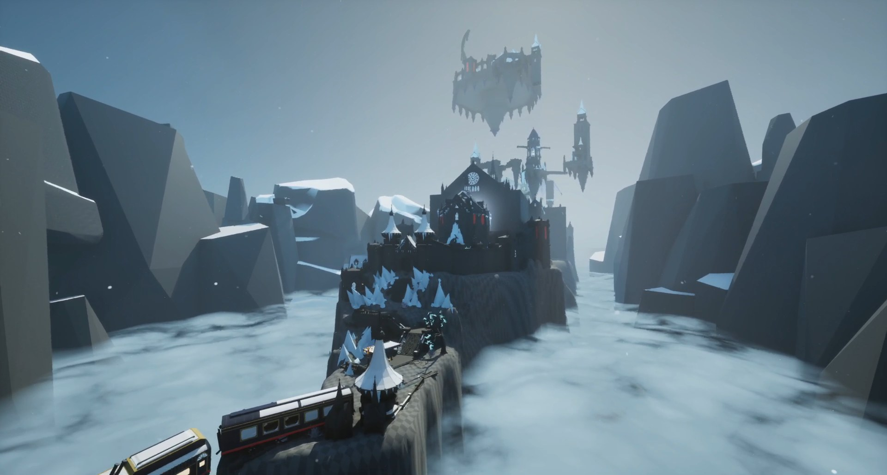
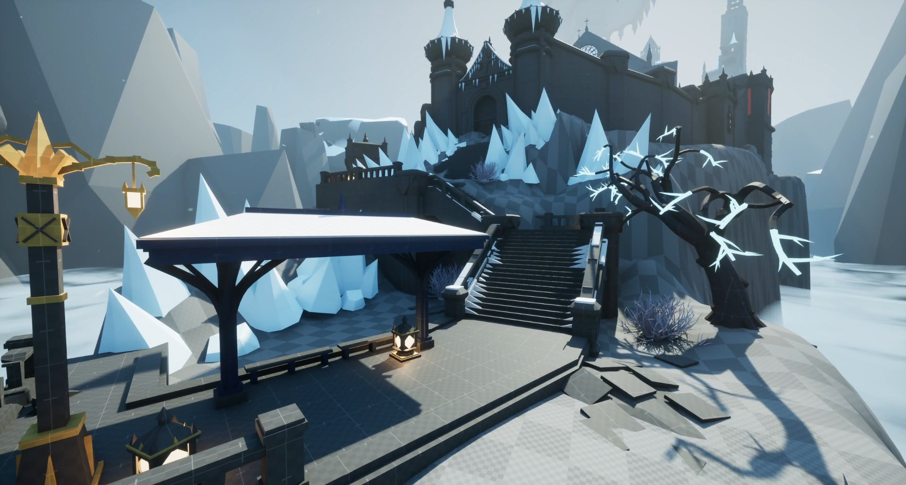
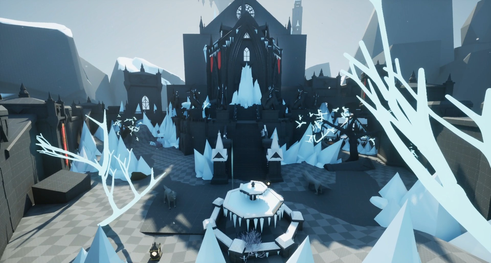
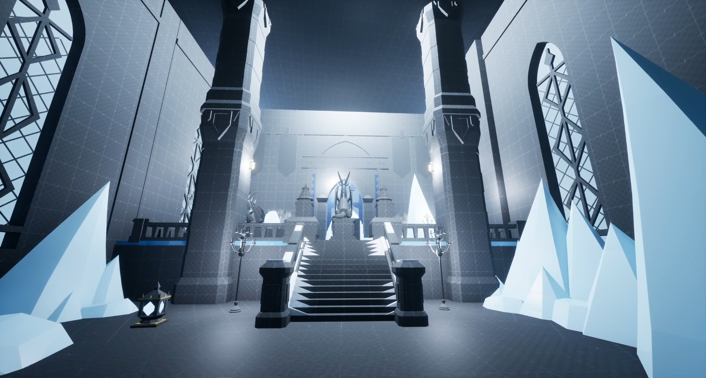
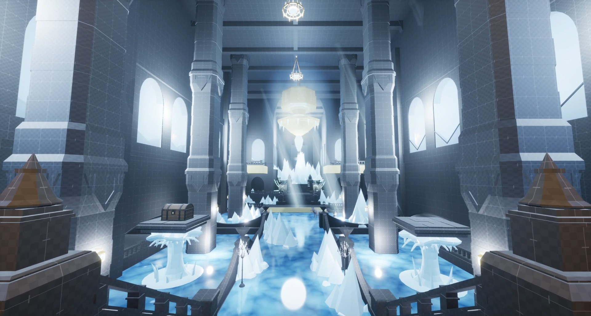
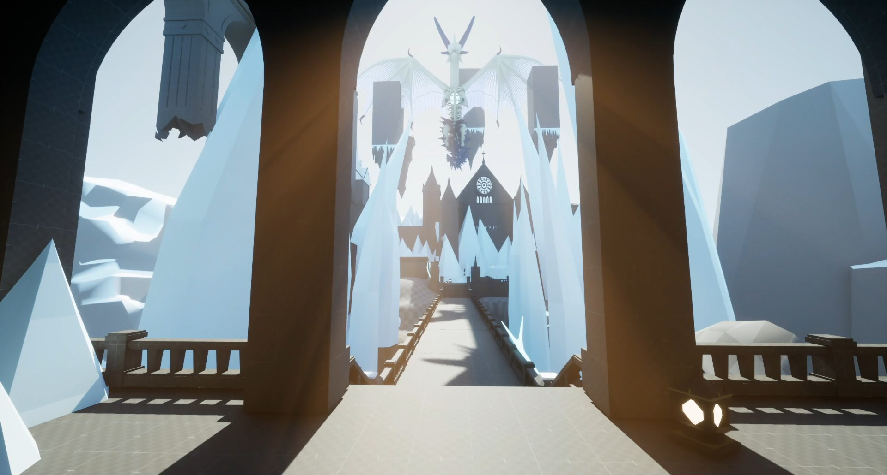

UE5 개인 프로젝트
오픈월드 레벨디자인 원신 재해석 : 하얀 왕관궁
GAMEPLAY MOVIE
PROJECT INFORMATION
- 장르
- 3인칭 오픈월드 RPG
- 엔진
- Unreal Engine 5.8
- 맵 사이즈
- 약 200(m) x 490(m)
- 플레이타임
- 15분
- 제작 기간
- 3주 (2026.10.03 ~ 10.23)
- 레퍼런스
- 세키로 / 원신
OVERVIEW
원신 스네즈나야 지역의 월드 퀘스트 ‘하얀 차르’의 배경인 ‘하얀 왕관궁’을 레이아웃, 동선, 퍼즐 단위로 분해해 재해석한 레벨 디자인입니다.
퍼즐과 액션 요소를 부각해, 세계관의 규칙을 단계적으로 익히고 하나의 모험을 마쳤다는 경험을 주고자 했습니다.
CONCEPT
망국에 홀로 남아 타락한 서리고룡을 물리치는 액션 & 퍼즐 어드벤처
시놉시스
하얀 왕관궁은 한때 번영했던 신성 왕국의 궁전이다. 왕국의 수호자이자 상징이던 신성룡은 긴 잠에서 깨어나 멸망한 왕국을 마주하고, 그 현실을 받아들이지 못한 채 서리고룡으로 타락한다.
플레이어는 모험가로서 하얀 왕관궁에 들어가, 망령이 된 서리고룡을 쓰러뜨려야 한다.
CORE PLAY
로프 액션
탐험 도구인 로프를 맵 곳곳의 액션 포인트에 걸어 이동한다.
탐색과 퍼즐
상호작용 오브젝트와 단서를 찾아가며 플레이어가 공간을 학습하도록 유도한다. 익힌 규칙은 다음 방에서 더 어려운 형태로 다시 쓰인다.
이벤트 연출
연출, 이벤트, 조명으로 플레이어의 긴장감을 조절하고 플레이 흐름의 몰입도를 높인다.
VIEW POINTS








1 / 8